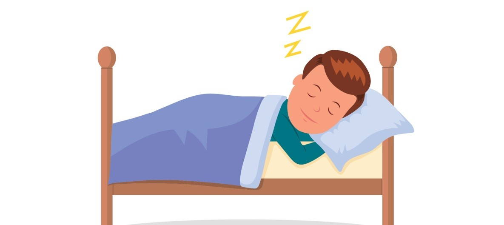

Сон – особое состояние человека и животных, которое необходимо для восстановления сил, энергии, укрепления иммунной системы, нормализации обмена веществ. Полноценный сон способствует здоровью, а его недостаток провоцирует некоторые заболевания, среди которых ожирение
Ученые давно обратили внимание на связь между лишним весом и хроническим недосыпанием. Люди, которые спят меньше шести часов в сутки, чаще страдают ожирением и диабетом. Происходит это потому, что лишение сна влияет на содержание гормонов «аппетита» − грелина и лептина. Хронически недосыпающие люди едят больше, только организм вместо пополнения запасов энергии пополняет жировые запасы.
Ученые задались вопросом, а могут ли нарушения в метаболизме влиять на сон? Исследование проводили на микроскопическом черве Caenorhabditis elegans. Этот червь очень удобен для изучения сна, поскольку его нервная система состоит всего из 302 нейронов, два из которых ответственны за сон: они получают сигналы от клеток печени, глаз и других органов и запускают переход ко сну. Ученые выяснили, что метаболизм и сон у C. elegans связаны через белок KIN-29, который регулирует активность генов сна в специальных сенсорных нейронах. У нас тоже есть белок с подобной функцией – SIK.
Это исследование объяснило, почему у людей с ожирением проблемы со сном. Оказалось, все дело в нарушении сигнализации между жировыми отложениями и клетками мозга, контролирующими сон.